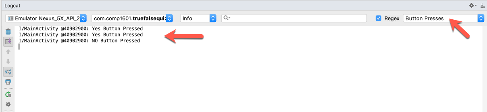
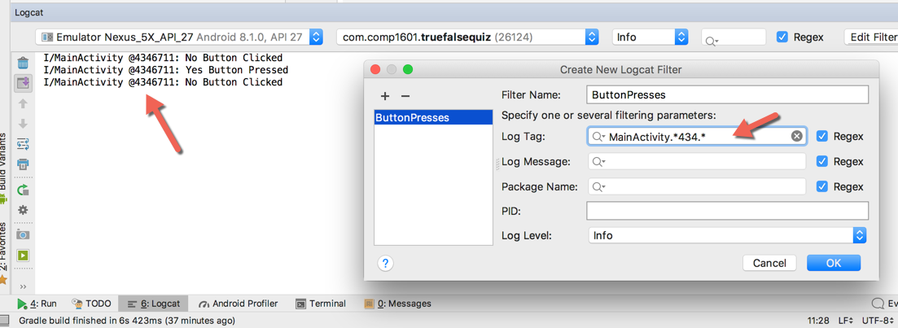

COMP 1601 Winter 2020
Tut07 -Debugging with Logcat
© L.D. Nel 2020
Revisions:
Description
Android developers say "Logcat is your friend". In this tutorial we will learn about Logcat -one of Android Studio's most poplular tool windows. It is very helpful for debugging and learning about what is going on with an application's code.
This tutorial introduces Regular Expressions which are used a lot in all programming. As preparation for this exercise study this online regular expression tutorial or look up other resoures. There is also a handy cheat sheet
You need to demonstrate your exercise to the TA or Prof. before you leave the class to get credit for it. If you complete, or make significant progress on the exercise you will get a mark of 2. If you make some progress you will get a mark of 1 and can "upgrade" that mark to a 2 by showing your completed work within one week of this exercise. 0 marks for a no-show or unsufficient progress.
Demo Code
For this tutorial use your answer code from the previous tutorial exercise. Open your project and verify that it runs. It should present some true false questions that the user can answer. When they answer a question it advances to the next question.
Preliminary: System.out.println()
Add System.out.println() statements to your two button handlers (it might look something like the following though your handler code will look slightly different:
mYesButton.setOnClickListener(v -> {
//Handle the yes button click
System.out.println("Yes Button Clicked");
//...
});
mNoButton.setOnClickListener(v -> {
//Handle the no button click
System.out.println("No Button Clicked");
//...
});
Now run the app and notice when you click on the Yes and No buttons you see the printout in the Run window:
Printing to System.out is a very common technique when debugging java code in general. Android however provides better mechanism though: the Logcat.
Problem 1: Logcat
We will, in general, print to the Logcat window. Open the Logcat tool, and make sure your device or AVD that you are testing on is selected. Your System.out.println() statements print to the Logcat window as well but there is so much other stuff being printed that you likely won't see the messages. We are going to change the code to write specificaly to the Logcat and also learn how to filter its output so we can choose what we want to see.
The benefit of Locat over System.out.println() is that you can apply filtering to control what you see. A lot of information tends to spew out on Logcat so you need to filter to see only what you are interested in.
To write to Logcat you use:
Log.i(TAG, message);
where i represents information (other options are: d for debug, e for error etc.). TAG is a string that can be used filter on and message is the information string you want to print out.
Add the following TAG at the top of your MainActivty class:
private final String TAG = "1601QuizMainActivity";
Replace the System.out.println() calls with the following instead
mYesButton.setOnClickListener(v -> {
//Handle the yes button click
Log.i(TAG, "Yes Button Pressed");
//...
});
mNoButton.setOnClickListener(v -> {
//Handle the no button click
Log.i(TAG, "No Button Clicked");
//...
});
Set the logcat level to info and choose Show only selected application. This time notice the output of pressing the buttons: you can see the I for info, the TAG and the message. Selecting info at least gets rid of some other messages and restricting output to the selected application helps too. But it may not be enough to spot your button press messages from among all the other messages.
Notice however there is a lengthy prefix before the messages. That takes up room and can be annoying. You can turn that off in the Logcat settings menu:
Now you will have more room for your messages (but there is probably still too much traffic to spot your own messages from among those that get generated:
Problem 2: Basic Filtering
We can filter the output based on our TAG. Choose Edit Filter Configuration and create a new filter to filter based on our tag at the info level. Below I've called the filter ButtonPresses. Leave the Regex boxes checked for now. Enter your TAG string's value in the Log Tag: field so that only those messages will be shown.
Now we can filter based on our TAG. Notice all the extra junk is no longer displayed:
Problem 3: A Better TAG
For debugging when apps get more complicated we've found the following TAG to be very useful (and universal: you can add the same TAG statement to each of your classes). Modify your TAG to match:
private final String TAG = this.getClass().getSimpleName() + " @" + System.identityHashCode(this);
Recompile and run the app. Modify the filtering to use your class name MainActivity as the TAG filter.
Now when you run your app you should see something like the following:

In this output the class name, MainActivity along with the process id is being displayed as our TAG. In debugging it is often necessary to verify that the output is coming from the process you want to be watching. To demonstrate this do the following:
1) Run the app with this new TAG and answer a couple of the quiz questions. Notice the button presses in the logcat.
2) Rotate the AVD to horizontal position. This is a two step process as illustrated below:
IMPORTANT: Notice that the quiz question has returned to the first question and when you press the Yes and No buttons now the Logcat is showing a different process ID:
Rotate the device back to vertical and notice yet another process ID is used for the running app.

This is an important clue as to what happens when you rotate a device in android: the current activity (process) is killed and a new version started up. In our case the new one went back the first quiz question -can you figure out why? This is probably not desireable and we will figure out how to deal with it as the course progresses. (For now you could just disable rotation in your app -see if you can figure out how.)
Problem 4: Regex Filtering
The filtering does not have to be based on just complete strings or substrings. The filtering can use regular expressions (in effect when the Regex check box is checked.). The following online regular expression tutorial provides a nice disussions of regular expressions including a handy cheat sheet
For example, the following filter would show only button presses for processes whose ID's contain the substring "434":

Go through the tutorial material on regular expressions and then build a filter that would show only Logcat button presses for processes whose ID ends in a particular 2 digit number and that only shows the No Button presses.
Problem 5: Printing Device Info to Logcat
Sometimes in debugging it is necessary, or informative, to display on the Logcat information about the real device or AVD that is running your app. Android provides a variety of details that can be accessed by methods provided in the andoid.os.Build class among others.
For example the following function could provide a lot of details. Implement this method in your MainActivity class and then add a Log.i(TAG, getDeviceInfo()); call in your onCreate() method in class MainActivity. (This is our first example of writing java code that involves exception handling which uses the try-catch block structure.)
When you're done run your app again you should see the device info printed to the logcat:
When you have completed these problems demonstrate your code to the TA or Prof. to get credit for the tutorial.Â